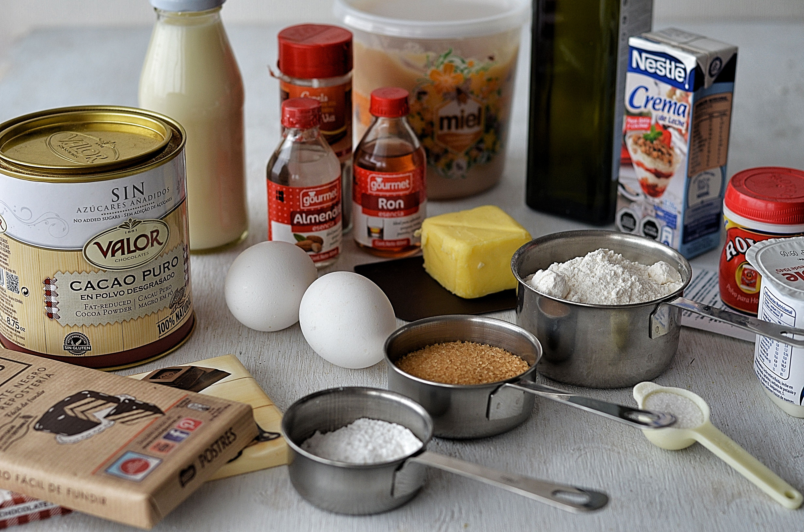

Carrito
CarritoEl arte de crear el pastel perfecto
15 de Agosto de 2026
En Pasteleria Mil Sabores creemos que crear un buen pastel es mucho mas que seguir una receta al pie de la letra. Cada preparacion comienza con la seleccion cuidadosa de los ingredientes que utilizaremos.
En nuestra pasteleria utilizamos ingredientes de calidad para conseguir el mejor sabor y textura en cada uno de nuestros productos. La harina, los huevos, la leche, el chocolate y las frutas son seleccionados pensando siempre en nuestros clientes.
La importancia de los ingredientes
Uno de los secretos para conseguir un pastel delicioso es utilizar siempre imgredientes frescos y mantener las cantidades adecuadas. Cada ingrediente cumple una funcion importante dentro de la preparacion.
Tambien conbinamos recetas tradicionales con nuevas ideas para ofrecer productos que mantengan el sabor de nuestra historia, pero que tambien se adapten a los gustos mas actuales.
Tradicion e Innovacion
Durante nuestros 50 años de historia hemos aprendido que la reposteria puede mantener sus tradiciones y al mismo tiempo se pueden incorporar nuevas tecnicas y sabores en las distintas recetas.
Nuestro objetivo es que cada cliente pueda disfrutar de un producto que fue preparado con dedicacion y que cada pastel sea parte de una celebracion especial.